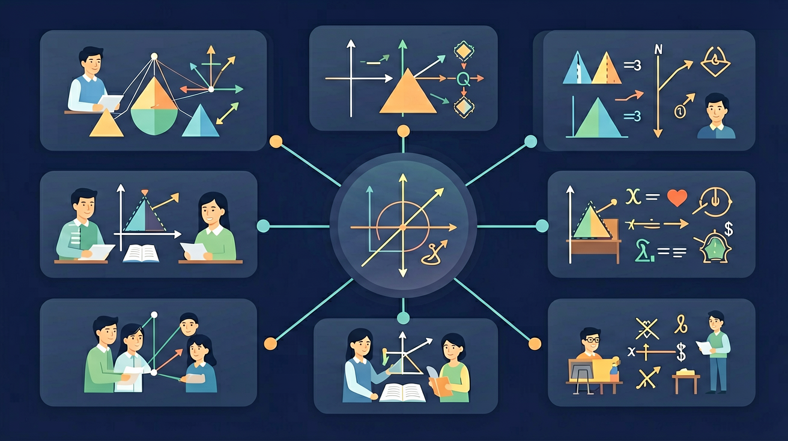

🎯 能说出复合应用题中隐藏的中间问题
🎯 能判断四则运算在复合问题中的使用顺序
🎯 能分析三步以上应用题的数量关系链
找出已知量、未知量和数量关系
把复杂问题分解成若干简单步骤
代入检验，写清答语
❓ 为啥题目里既有加法又有乘法？到底先算哪个？
❓ 这种题要算好几步，我怎么知道中间结果对不对呀？
❓ 老师，题目说'还剩多少'，是不是最后一步都要用减法？
学完这一课，这些问题你都能自信地回答。
解决复合应用题时，最关键的第一步是？
🌍 And（已知）：我们已经有了一定的基础知识
⚡ But（问题）：但还有一个重要概念需要深入理解
💡 Therefore（新知）：因此通过本节课的学习，我们将掌握新知识并能灵活运用
复合应用题通常需要先求一个中间量，才能求最终答案
分析方法：从问题出发，倒推需要什么条件
或：从已知条件出发，一步步推到答案
Step 1：要求5箱重多少kg，需要先知道什么？
Step 2：先求每箱重多少：24 ÷ 3 = ？kg
Step 3：5箱重多少：8 × 5 = ？kg
解应用题就像侦探破案，一步一步找线索！
解：每天生产：240÷4=60个；需要天数：720÷60=12天
🔗 连乘/连除：A×B×C 或分步计算
🔀 加减组合：先算部分，再合并或相减
🔄 比较关系：多几个、少几个、是几倍
用线段图把已知量和未知量的关系画出来，让抽象变具体！
例：甲有20本书，乙比甲多8本，丙比乙少5本，丙有多少本？
甲：|——20——| 乙：|——20——|+8=28 丙：28-5=23
Step 1：乙比甲多8本，乙有多少本？
Step 2：丙比乙少5本，丙有多少本？
Step 3：丙有多少本书？
Step 1：先求速度（中间量）= 120 ÷ 2 = ？km/h
Step 2：5小时行驶了多少km？60 × 5 = ？
Step 3：还需行驶多少km？300 - 300 = ？
🛒 超市打折：原价80元，打八折，买3件共花 192元
🚆 火车时刻：10:30出发，平均速度200km/h，14:00到站，路程 700km
💰 利润计算：进价×数量+运费=总成本，总收入-总成本=利润
一家书店，上午卖出36本，下午卖出的是上午的2倍，一共卖出多少本？
题目：书架上有3层，每层放12本书，现要改为4层，每层放多少本？
三道题检验「复合应用题」的掌握情况，做错也别急，看解析再回到对应模块复习。
第1题：用四步法解题时，第一步应该做什么？
第2题：商店上午卖出 35 箱，下午比上午多卖 8 箱，一天共卖多少箱？
第3题：复合应用题与一步应用题最大的不同是什么？
✅ 四步法：读题→分析→列式→检验
✅ 找中间量：复合题需要先求中间步骤的结果
✅ 线段图：把数量关系可视化，帮助理解
✅ 验证：代入检验，确保答案合理
学习要用心，理解比死记更重要；多问"为什么"，把知识连成网
💡 常见错误往往就在细节中，仔细检查每一步！
回忆：今天学了哪些关键词和规则？试着说出来。
用自己的话解释今天学的核心概念，不看书能说清楚吗？
用今天的知识解决一个实际问题，或写一个新例子。
把今天的知识与已有知识联系起来：有什么共同点？有什么区别？能不能自己创造一道新题？